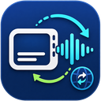

正在检查字幕 Engine...
优先读取目标语言字幕；没有目标字幕才调用翻译 API。
免费 / 自带 API Key
有目标语言字幕时直接配音；没有目标字幕时可用 Chrome 本地免费翻译，或选择 Google / Microsoft / AI Provider 并填写自己的 Key。
API Key 只保存在本机 Chrome 扩展存储中，不上传到我们的服务器。
无字幕转写
用于没有 YouTube 字幕的视频；可免费使用本地 whisper.cpp，也可选择自己的转写 API。